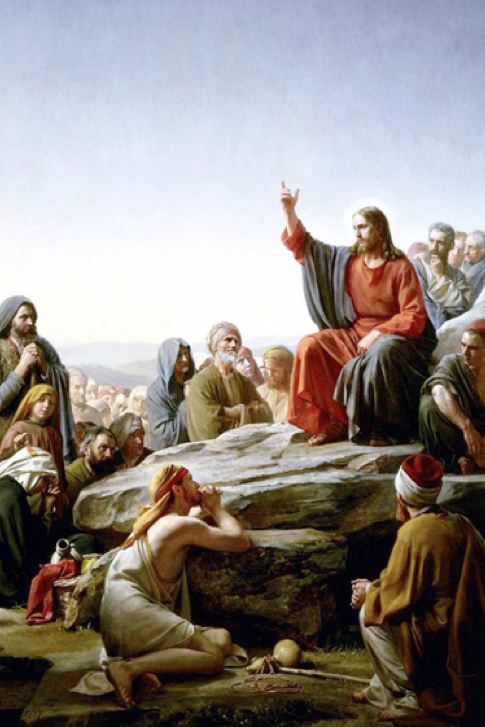
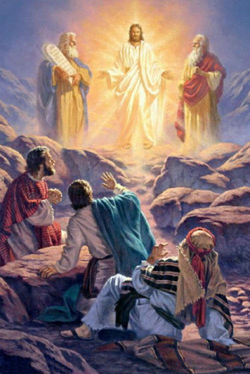
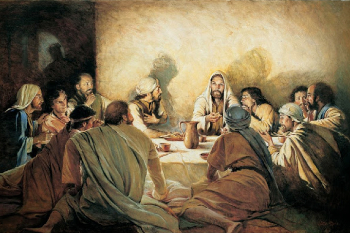

Vocações
Mistérios Luminosos
Quintas-feiras
Introdução:
Invoquemos a proteção e a intercessão de Maria Santíssima para rezarmos juntos o terço missionário.
Maria, a Mãe de Jesus, viveu em profunda disponibilidade à vontade de Deus e acompanhou passo a passo o seu filho Jesus. Hoje acompanha a Igreja missionária em seus desafios em todo o mundo.
Rezando o terço missionário alargamos os nossos horizontes e abraçamos com nossa solidariedade a imensa diversidade de povos, culturas e religiões, cada qual com suas riquezas e contradições. Abrimos o nosso coração para a humanidade e trabalhamos para construir o Reino de Deus no agora de nossa história.
Oferecimento
Divino Espírito Santo, iluminai nossas inteligências e nossos corações para que, ao meditarmos os mistérios da nossa redenção, possamos imitar o exemplo de Jesus e de Maria, anunciando a todas as pessoas o amor misericordioso de Deus para conosco.
Em comunhão com toda a humanidade, oferecemos nossas orações: pela paz no mundo, pelas pessoas vítimas das injustiças, pela santificação das famílias, por aqueles que anunciam o Evangelho nos cinco continentes, pelas intenções do Papa, por nossas comunidades e por todo o povo de Deus, para que seja sempre mais solidário com os povos do mundo inteiro.
Nossa Senhora, Estrela da Evangelização, fazei que todas as pessoas de boa vontade se deem as mãos e se tornem construtoras de uma sociedade sem fronteiras, justa e solidária.
Rezemos os mistérios luminosos participando da missão evangelizadora de Jesus por amor ao seu povo.
No 1º mistério contemplamos o batismo de Jesus no rio Jordão (Mc 5, 16-17).
Oração pela África
A África, ao longo dos séculos foi explorada por colonizadores, enfrentou conflitos tribais, calamidades naturais e as consequências da miséria. Mesmo assim, seu povo nunca perdeu a esperança.
Que as sementes do Verbo de Deus presentes no continente africano possam desabrochar e florescer em sociedades de paz e justiça onde as mulheres sejam respeitadas e que todos possam viver com dignidade
Pai-Nosso...
10 Ave-Marias
Glória ao Pai..
Ó meu Jesus, perdoai-nos, livrai-nos do fogo do inferno, levai as almas todas para o céu e socorrei principalmente as que mais precisarem de vós.
No 3º mistério contemplamos Jesus anunciando o Reino de Deus (Mc 1, 14-15)..

Oração pela Oceania
Num mundo em contínua transformação, olhemos com carinho para os povos da Oceania, especialmente os habitantes de milhares de ilhas espalhadas pelo imenso Oceano Pacífico.
Mesmo não conhecendo suas vidas, que possamos nos sentir irmanados porque somos filhos e filhas de um mesmo Pai criador que ama a diversidade e acolhe a cada um em sua singularidade.
Rezemos por todos os cristãos para que saibam respeitar e amar a diversidade de culturas e religiões e ao evangelizar sejam testemunho de diálogo e de acolhida e nunca de imposição e de dominação.
Pai-Nosso...
10 Ave-Marias
Glória ao Pai..
Ó meu Jesus, perdoai-nos, livrai-nos do fogo do inferno, levai as almas todas para o céu e socorrei principalmente as que mais precisarem de vós
No 4º mistério contemplamos a transfiguração de Jesus (Mt 17, 1-8).

Oração pela Oceania
Num mundo em contínua transformação, olhemos com carinho para os povos da Oceania, especialmente os habitantes de milhares de ilhas espalhadas pelo imenso Oceano Pacífico.
Mesmo não conhecendo suas vidas, que possamos nos sentir irmanados porque somos filhos e filhas de um mesmo Pai criador que ama a diversidade e acolhe a cada um em sua singularidade.
Rezemos por todos os cristãos para que saibam respeitar e amar a diversidade de culturas e religiões e ao evangelizar sejam testemunho de diálogo e de acolhida e nunca de imposição e de dominação.
Pai-Nosso...
10 Ave-Marias
Glória ao Pai..
Ó meu Jesus, perdoai-nos, livrai-nos do fogo do inferno, levai as almas todas para o céu e socorrei principalmente as que mais precisarem de vós.
No 5º mistério contemplamos a instituição da Eucaristia (Mt 26, 26-29).

Oração pela Ásia
Voltemos o nosso coração e o nosso olhar para a Ásia, berço das antigas civilizações, culturas e grandes religiões. Jesus nasceu na Ásia, assim como Moisés, Buda, Maomé, Confúcio, Krishna e tantos outros sábios e mestres.
Por isso, reverenciemos a profundidade das diferentes tradições religiosas e nos aproximemos com respeito e espírito de diálogo.
Peçamos pelas minorias cristãs que vivem na Ásia para que possam perseverar na fé, mesmo em tempos de perseguição, e com seu testemunho de amor, possam irradiar a bondade e a misericórdia de Deus.
Pai-Nosso...
10 Ave-Marias
Glória ao Pai..
Ó meu Jesus, perdoai-nos, livrai-nos do fogo do inferno, levai as almas todas para o céu e socorrei principalmente as que mais precisarem de vós.
Conclusão
Infinitas graças vos damos, Soberana Rainha, pelos benefícios que, todos os dias, recebemos de vossas mãos liberais. Dignai-vos, agora e para sempre, tomar-nos debaixo do vosso poderoso amparo e, para mais vos obrigar, vos saudamos com uma Salve Rainha:
Salve, Rainha, Mãe de Misericórdia, vida, doçura e esperança nossa, salve! A vós bradamos, os degredados filhos de Eva; a vós suspiramos, gemendo e chorando neste vale de lágrimas. Eia, pois, advogada nossa, esses vossos olhos misericordiosos a nós volvei e, depois deste desterro, mostrai-nos Jesus, bendito fruto do vosso ventre. Ó clemente, ó piedosa, ó doce e sempre virgem Maria.
Rogai por nós, Santa Mãe de Deus,
Para que sejamos dignos das promessas de Cristo. Amém.